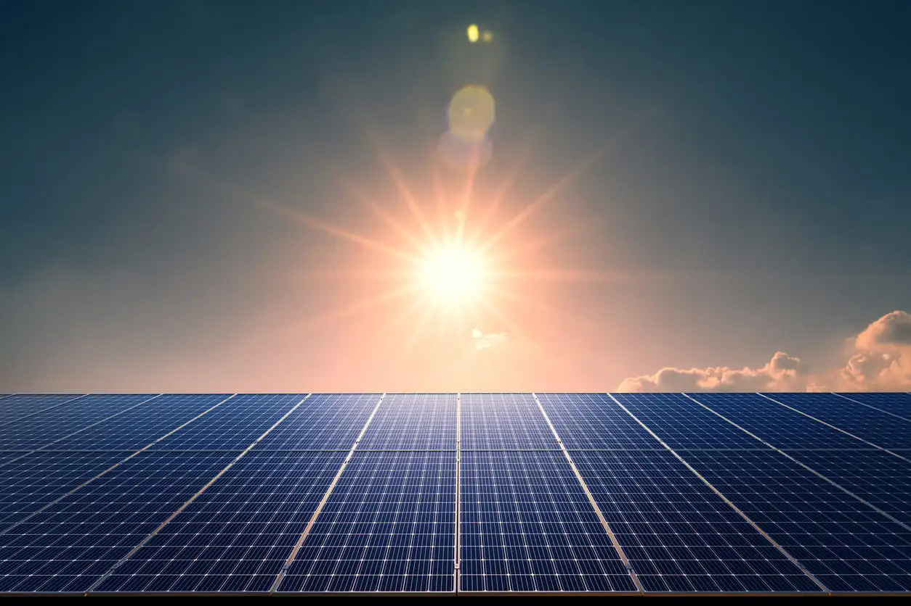
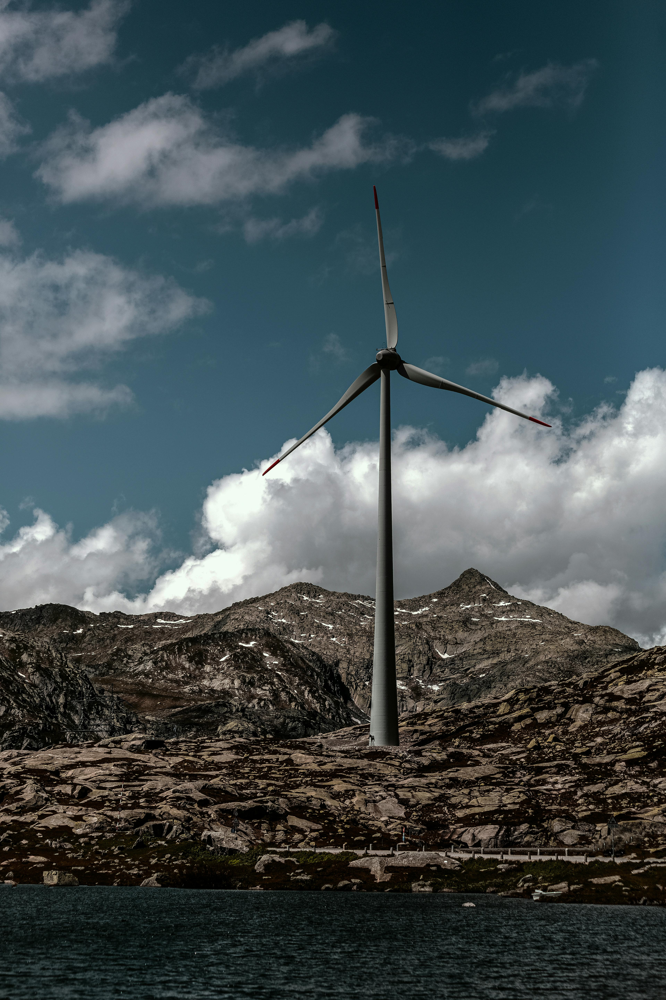
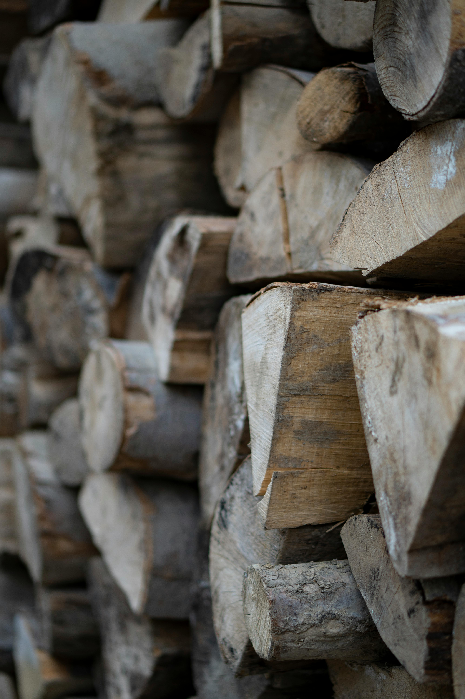

Energia limpa e Renovável: o Futuro da Energia
Tipos de energia limpa
Energia solar
oq é energia solar.
A energia solar é uma fonte renovável e inesgotável gerada pela luz (fotovoltaica) ou calor (térmica) do sol. Através de painéis fotovoltaicos, converte a radiação em eletricidade, reduzindo a conta de luz em até 90%, sendo sustentável e de fácil manutenção, embora exija alto investimento inicial e seja intermitente

Energia Eólica
oq é energia Eolica
A energia eólica é uma fonte renovável e limpa gerada pela força dos ventos, utilizando aerogeradores para converter energia cinética em >eletricidade. Com baixo impacto ambiental, é a segunda maior fonte de geração no Brasil, concentrada no Nordeste, destacando-se como inesgotável e crucial para a transição energética.

Hidrelétrica
oq é Hidrelétrica
usina Hidrelétrica gera eletricidade renovável transformando a energia potencial da água (represa) em energia cinética (fluxo) e, finalmente, em energia mecânica e elétrica através de turbinas e geradores. No Brasil, é a principal fonte de energia, com destaque para a usina de Itaipu, respondendo por cerca de 67% da eletricidade do país.

Biomassa
oq é biomassa
Biomassa é toda matéria orgânica de origem vegetal ou animal utilizada para gerar energia (calor, eletricidade, biocombustíveis). Considerada uma fonte renovável e limpa, ela aproveita resíduos agrícolas (bagaço de cana), florestais (madeira), industriais e urbanos, com destaque para a cana-de-açúcar na produção de etanol e bioeletricidade no Brasil.
Hidrogênio-verde
oq é Hidrogênio-verde
O Hidrogênio verde (
) é obtido pela eletrólise da água usando energia renovável (solar/eólica), separando hidrogênio e oxigênio sem emitir poluentes. É uma alternativa limpa aos combustíveis fósseis, com o Brasil posicionando-se como potencial líder global devido ao alto potencial de energias limpas e projetos no Nordeste.

Geotérmica
oq é Geotérmica
A energia geotérmica é uma fonte renovável e limpa obtida do calor interno da Terra, gerada pelo magma e decaimento radioativo no subsolo. Utilizada para gerar eletricidade (turbinas a vapor) ou aquecimento direto, é estável e inesgotável, mas com alto custo inicial. Islândia e EUA são líderes, enquanto o Brasil tem baixo potencial.